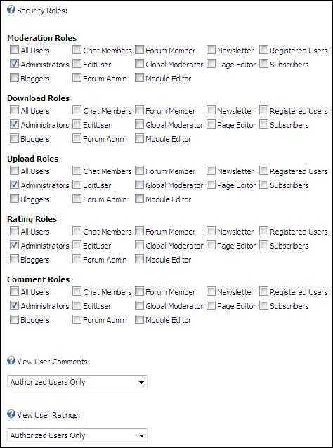

Setting Repository Role Access
How to set the roles which can perform uploading, downloading, rating, commenting and moderation on the Repository module. These permissions are in addition to the permission set in under Module Settings - Basic Settings. This tutorial also includes how to select the roles who can view comments and ratings. Note: Some Repository skins do not provide file downloading, comments, or ratings.
-
- Select the Repository Settings tab.
- Go to the Security Roles field.
- At Moderation Roles, each role that can moderate newly uploaded files. Users of this role will also be able to upload files without moderation.
- At Download Roles, for each role that can download files.
- At Upload Roles, for each role that can upload files.
- At Rating Roles, for each role that can add ratings.
- At Comment Roles, for each role that can add comments.
- At View User Comments, select between the following options:
- Authorized Users Only: Only users who are authorized to add comments can view comments. This is the default setting.
- All Users: All users who can view the module can view comments.
- At View User Rating, select between the following options:
- Authorized Users Only: Only users who are authorized to add ratings can view comments. This is the default setting.
- All Users: All users who can view the module can view ratings.
-
Click the Update button.

Configuring the Repository Security Roles